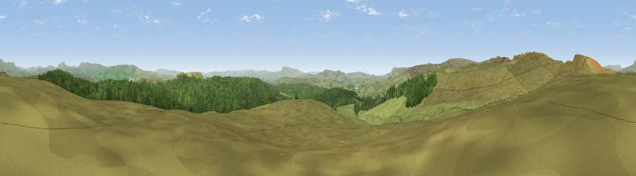

Viewpoint near Tosside
#8256 in England · top 18% of its area beats it · near TossideWhere it is
The exact computed spot (SD 74062 59925). Click the marker for map links.
The view, rendered

A 360° render of this exact spot computed from the terrain model, tree cover and land cover — summer colours, afternoon light, calibrated against photographs of famous viewpoints. Real trees, hedges and buildings will differ in detail.
The panorama
Grey silhouette: terrain skyline in each direction (720 bearings, Earth curvature and refraction included). Dashed green: skyline with trees (+15 m) and buildings (+8 m) as obstacles. Blue strip: how far the ground is visible on each bearing.
Where the view opens
Wedge length = distance to the farthest visible ground on that bearing (vegetation-aware). Rings at 10, 25 and 50 km.
What fills the view
78% grassland · 21% woodland
Angular shares of the visible panorama (visual magnitude), not map area. Landscape diversity 0.23 (0–1 Shannon).
Key numbers
More beautiful places nearby
The staircase of upgrades: each row has a higher view potential than everything closer. Driving times are estimates from straight-line distance, calibrated against real road routing — check an actual route before setting out.
| Place | Direction | Drive | Score |
|---|---|---|---|
| Viewpoint c9214_7456 | WNW · 1 km | ~4 min | 72.4 |
| Viewpoint c9212_7400 | W · 4 km | ~9 min | 72.5 |
| Hailshowers Fell | WNW · 4 km | ~10 min | 73.8 |
| Viewpoint c9157_7266 | WSW · 11 km | ~21 min | 75.6 |
| Whins Brow | WSW · 12 km | ~23 min | 76.3 |
| Little Ingleborough | N · 14 km | ~25 min | 78.8 |
| Viewpoint near Ingleton | N · 15 km | ~26 min | 79.5 |
| Whernside | N · 22 km | ~36 min | 79.9 |
54.03465, -2.39750 · source: screening · position refined by local search. Computed location — check access rights before visiting.